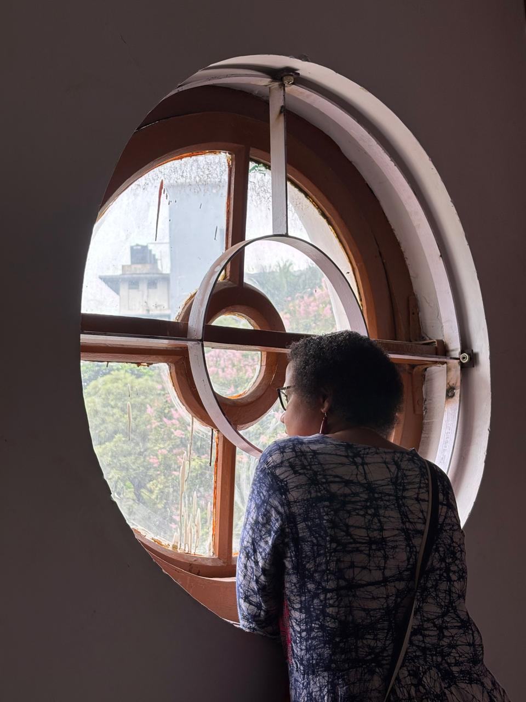

Do you speak Bangaal bhasha? Interweaving caste, class, and lived narratives of East Bengali Hindu migrants
Journal of Ethnic and Migration Studies
ASSISTANT PROFESSOR · IIT KHARAGPUR
Linguist and researcher working at the intersection of language, multilingualism, education, and community-based research.

PROFILE
Dr. Dripta Piplai (Mondal) is an Assistant Professor in the Department of Humanities and Social Sciences at the Indian Institute of Technology Kharagpur.
She received her PhD from the Centre for Advanced Studies in Linguistics, University of Delhi, in 2015 and joined IIT Kharagpur in 2018.
Her research brings together sociolinguistics, morphosyntax, language policy and planning, and community-based research. Her work engages with linguistically diverse communities in India, particularly in the context of multilingual education and the documentation of linguistic and cultural practices.
RESEARCH
Language policy and planning, language hierarchy, language conflict, and education in colonial and postcolonial India.
Hybrid language practices, multilingual pedagogy, syntactic variation, and linguistic diversity.
Language vitality, endangerment, linguistic documentation, and community-based research.
Oral history, ethnomusicology, cultural memory, Rabindrasangeet, and vernacular cultural practices.
COMMUNITY-BASED RESEARCH
Her research has engaged with linguistically diverse communities across India, including Rajbanshi, Mundari, Koda, Toto, Kurmali and Tea-Garden Sadri.
Current research focuses particularly on multilingual and hybrid language practices in rural West Bengal, alongside questions of linguistic vitality, documentation, education and cultural continuity.
CURRENT & COMPLETED WORK
Principal Investigator · Digital archiving and documentation of oral traditions
Principal Investigator
Principal Investigator · Study of two selected areas of Bengal
Principal Investigator
SELECTED PUBLICATIONS
Journal of Ethnic and Migration Studies
Social Identities
International Journal of Multilingualism
Cadernos de Tradução
TEACHING
Introduction to Language and Linguistics
2023
Tools and Technologies of Language Documentation
2024
Language Revitalization
Multilingual Pedagogy
Language Technology
Critical Thinking
PHD GUIDANCE
RECOGNITION
Central Institute of Indian Languages Fellowship, Government of India · 2015–16
Wipro Applying Thought in Schools Fellowship · 2014–15
Junior Research Fellowship, UGC · 2010
National Child Rights Research Fellowship, CRY · 2006
Independent Research Fellow, SARAI-CSDS · 2005–06
Selected for UGC Lectureship · 2004
CONTACT
Assistant Professor
Department of Humanities and Social Sciences
Indian Institute of Technology Kharagpur
Kharagpur, West Bengal, India
dripta@hss.iitkgp.ac.in
+9051065995